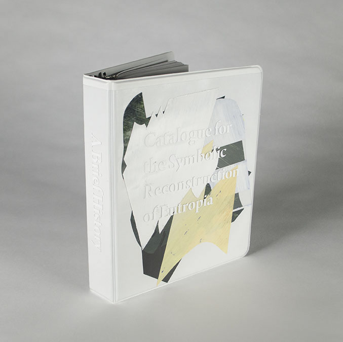
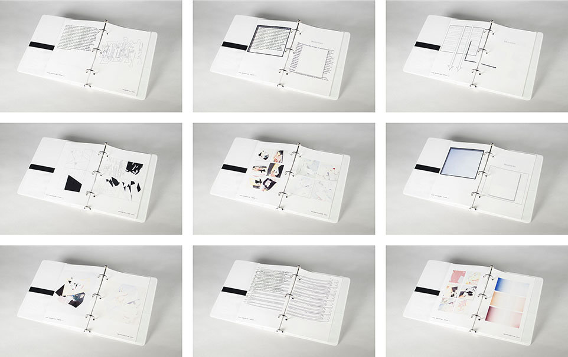
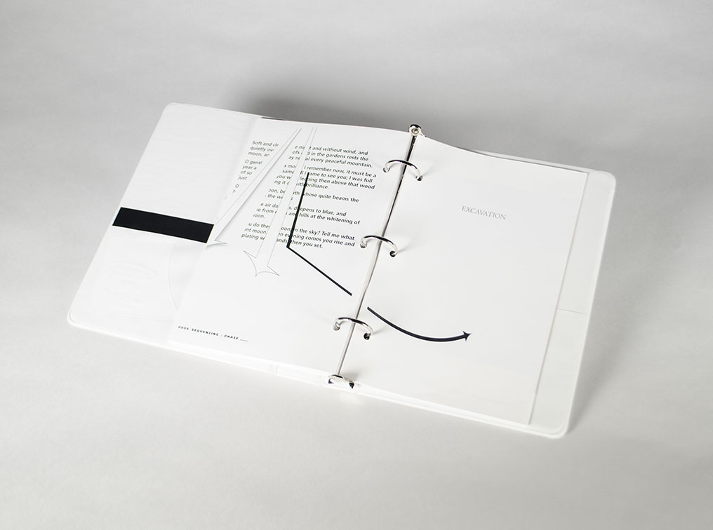
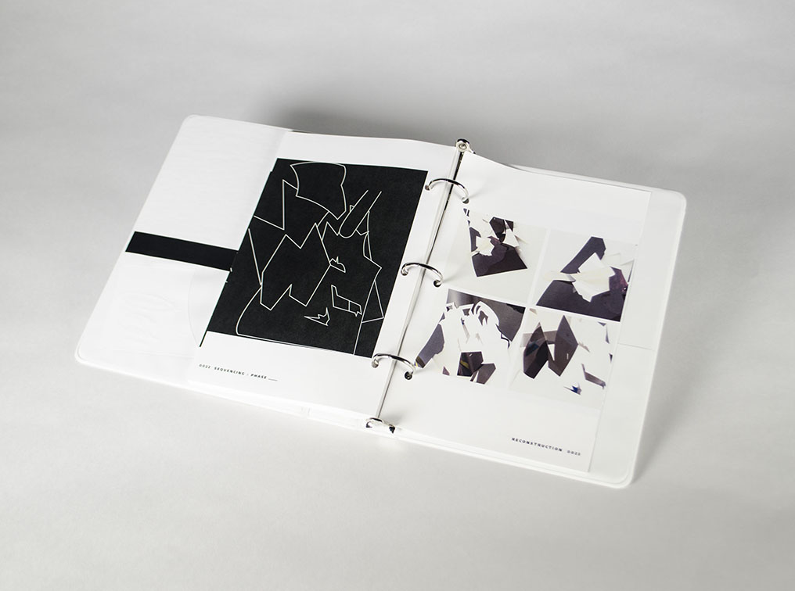
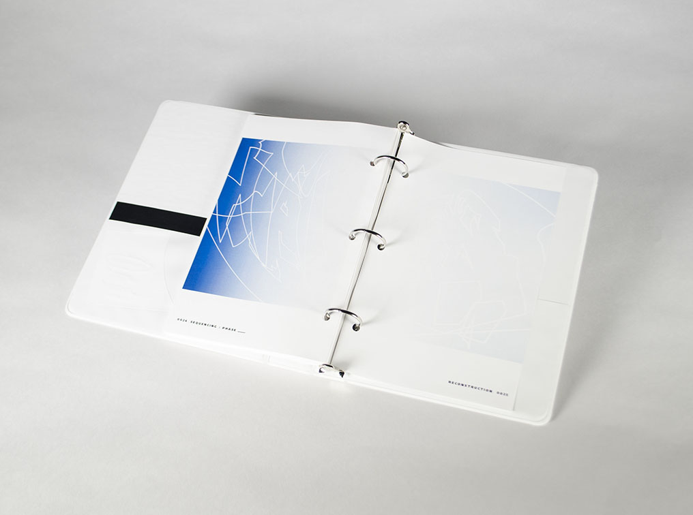

Catalogue for the Symbolic Reconstruction of Eutropia was created to act as a physical container for the formal experiments conducted in part one of the project. The resulting publication was then used to develop a rule set to structure later formal explorations.



